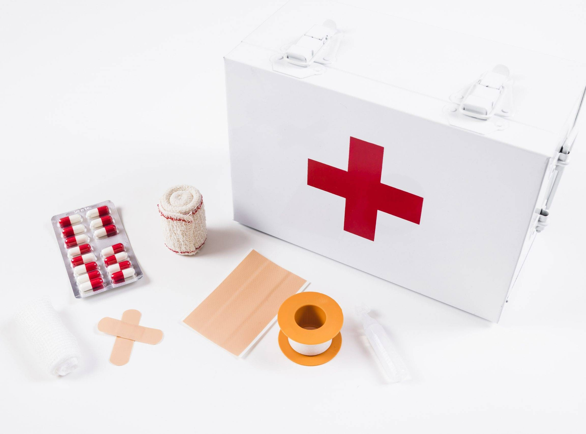

P3K (Pertolongan Pertama pada Kecelakaan)
Pengertian & Tujuan
P3K (Pertolongan Pertama pada Kecelakaan) adalah bantuan awal kepada pekerja yang mengalami cedera atau penyakit mendadak di area kerja sebelum mendapat penanganan tenaga medis. Tujuan P3K di PT INALUM adalah:
- Menyelamatkan nyawa dan mempertahankan fungsi vital.
- Mencegah kondisi memburuk dan mencegah komplikasi.
- Mengurangi rasa sakit dan memberikan kenyamanan.
- Mempercepat pemulihan hingga mendapat perawatan lanjutan.
- Mendukung budaya zero accident di seluruh area kerja.
- Setiap area dilengkapi kotak P3K & petugas P3K terlatih.
- Prosedur mengacu pada peraturan nasional & pedoman internal K3 INALUM.

Peralatan Wajib Kotak P3K
Checklist isi & fungsi| Item | Fungsi | Catatan Penggunaan |
|---|---|---|
| Kasa steril & perban elastis | Menutup luka & menghentikan pendarahan ringan | Gunakan teknik balut tekan; ganti bila basah/kotor |
| Plester perekat (assorted) | Menutup luka gores/kecil | Bersihkan kulit sebelum tempel |
| Larutan antiseptik | Membersihkan luka dari kuman | Jangan digunakan pada luka bakar derajat tinggi |
| Saline/NaCl 0,9% | Irigrasi luka & cuci mata darurat | Gunakan botol eye wash bila tersedia |
| Perban segitiga | Immobilisasi sementara (sling) | Kombinasikan dengan bidai bila ada kecurigaan fraktur |
| Sarung tangan sekali pakai | Proteksi penolong & korban | Ganti setiap penanganan pasien |
| Gunting & pinset | Membuka pakaian, memotong perban, mengambil serpihan | Disinfeksi sebelum/sesudah pakai |
| Masker respirator bedah | Mencegah kontaminasi droplet | Pastikan menutup hidung & mulut |
| Termometer & pulse oximeter | Monitoring suhu & saturasi O₂ | Catat hasil pada formulir insiden |
| Selimut darurat (thermal) | Mencegah hipotermia/ syok | Tutup tanpa menekan area luka bakar |
Prosedur P3K di Area Kerja
- Amankan lokasi: hentikan sumber bahaya (matikan mesin/listrik), pasang rambu.
- Nilai kondisi korban: respons, jalan napas, pernapasan, sirkulasi (primary survey).
- Panggil bantuan: hubungi Petugas P3K/Supervisor & Klinik Perusahaan.
- Tindakan awal sesuai kasus:
- Perdarahan: tekan langsung, elevasi, balut tekan.
- Luka bakar: siram air mengalir (10–20 menit), jangan oles bahan kimia/mentega.
- Tersengat listrik: putus sumber listrik sebelum menyentuh korban.
- Paparan bahan kimia: bilas area/ mata dengan air/NaCl; lepas pakaian terkontaminasi.
- Cedera jatuh/fraktur: imobilisasi, hindari memindah tanpa stabilisasi.
- Siapkan rujukan: jika perlu, bawa ke Klinik INALUM/RS rujukan; sertakan catatan P3K.
- Dokumentasi & pelaporan: isi Formulir Laporan Kecelakaan Kerja (LK3) & eskalasi ke K3.
1. Amankan
Hentikan sumber bahaya & lindungi penolong/korban
2. Nilai & Tolong
Primary survey, tindakan sesuai kasus
3. Rujuk & Laporkan
Hubungi Klinik/RS, isi LK3, investigasi K3
Peran & Tanggung Jawab
- Pekerja: melapor insiden, membantu sesuai pelatihan, tidak memindah korban ceroboh.
- Petugas P3K: memberikan pertolongan awal, koordinasi rujukan, dokumentasi LK3.
- Supervisor: mengamankan area, memastikan ketersediaan peralatan & personel.
- Departemen K3: investigasi, rekomendasi pencegahan, update SOP & pelatihan.
- Klinik Perusahaan: penanganan medis lanjutan & rujukan ke RS bila perlu.
Bila korban tidak sadar, perdarahan hebat, luka bakar luas/derajat tinggi, sesak berat, nyeri dada, atau ada kecurigaan fraktur/cedera kepala leher.
Minimal bulanan dan setiap kali setelah digunakan. Catat pada log pemeriksaan & segera isi ulang barang habis pakai.
Pekerja yang telah mendapatkan sosialisasi dasar diperbolehkan melakukan tindakan sederhana sesuai SOP. Tindakan lanjutan ditangani petugas P3K/tenaga medis.